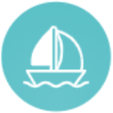

Mornings are glass
The wind sleeps until noon. That is when you swim off the stern, run the tender ashore for bread, and motor a couple of miles to the next bay before anyone else wakes up.

AIyachts EnquireGallery of Experiences
No stock photography. Every frame below was taken on one of our charters — by our crews, our skippers and our guests.
26 frames · Ionian Sea
Filter the wall, or open any frame full screen. Films play in the viewer.
Nothing in this category yet.
What you are looking at
Most of these frames come from the same stretch of the southern Ionian — the water between Lefkas, Meganisi, Kalamos and Ithaca, where the coves are deep, the sea caves are cool, and the villages light up at dusk.
The wind sleeps until noon. That is when you swim off the stern, run the tender ashore for bread, and motor a couple of miles to the next bay before anyone else wakes up.
The sea breeze arrives around one o'clock and builds through the afternoon — enough to switch the engine off, sheet in, and cover the distance to the evening's anchorage properly under sail.
Stern-to on a village quay, or anchored alone with a line to a tree. Either way the light goes gold, then pink, and the day ends at a table twenty metres from the boat.
Your turn
Pick a week, pick a yacht, and we will handle everything between the airport and the anchorage.